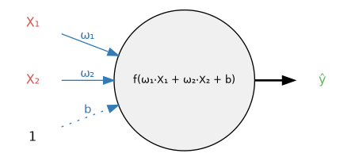
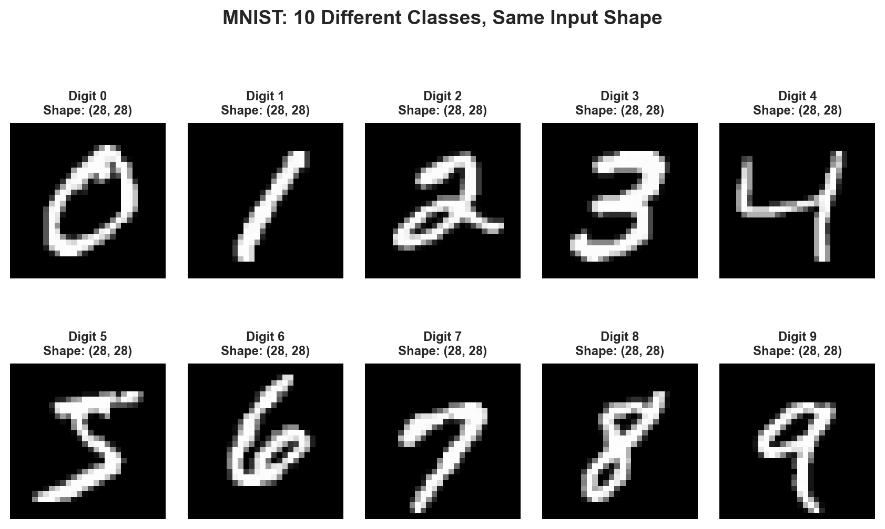

Notebook 1: Your First Neural Network - Predicting Rain with PyTorch
Ghana AI Talent Accelerator - Deep Learning Foundations
Author
Ghana AI Accelerator
1 Philosophy: First the Fire, Then the Physics
Most courses teach you how to build a carburetor before letting you drive a car. We do the opposite.
We start by training a working model. Once you’ve seen it work, we peel back the layers to understand why. This “Top-Down” approach, pioneered by Jeremy Howard (fast.ai), ensures you stay motivated by solving real problems immediately.
Day One Goal: Train a rain predictor in 30 minutes. Day Thirty Goal: Understand why changing the learning rate from 0.001 to 0.01 collapsed your loss curve.
This follows the mantra: “You don’t need to understand the carburetor to drive a car, but you’ll want to when it breaks down.”
2 The Problem: Will It Rain Tomorrow?
2.1 Why This Problem?
We’re going to build a neural network that predicts whether it will rain tomorrow based on today’s weather data. This is a perfect first problem because:
Relatable: Everyone understands weather
Tabular data: Simple numbers, not complex images
Binary classification: Yes/No answer (easier than 10-class digit classification)
Real data: Australian weather measurements from multiple stations
Class imbalance: Teaches important real-world challenges
2.2 The Dataset
We’ll use the Australian Weather dataset, which contains daily measurements from multiple weather stations. Each row represents one day’s weather with features like:
Rainfall: How much rain fell today (mm)
Humidity3pm: Humidity percentage at 3 PM
Pressure9am: Atmospheric pressure at 9 AM (hPa)
RainToday: Did it rain today? (Yes/No)
RainTomorrow: Will it rain tomorrow? (Yes/No) ← Our target
Let’s load and explore the data:
import torchimport torch.nn as nnimport torch.optim as optimimport torch.nn.functional as Fimport pandas as pdimport numpy as npimport matplotlib.pyplot as pltimport seaborn as snsfrom sklearn.model_selection import train_test_splitfrom sklearn.metrics import confusion_matrix, classification_report# Set style for plotssns.set(style='whitegrid', palette='muted', font_scale=1.2)%matplotlib inline# Set random seeds for reproducibilityRANDOM_SEED =42np.random.seed(RANDOM_SEED)torch.manual_seed(RANDOM_SEED)# Device setup - use GPU if availableimport warningswarnings.filterwarnings('ignore')device = torch.device("cuda:0"if torch.cuda.is_available() else"cpu")print(f"Using device: {device}")
Using device: cpu
2.2.1 Load the Data
We’ll use the Australian Weather dataset from the provided URL:
# Download and load the weather dataseturl ="https://raw.githubusercontent.com/gchoi/Dataset/refs/heads/master/weatherAUS.csv"df = pd.read_csv(url)print(f"Dataset shape: {df.shape}")print("\nFirst 5 rows:")print(df.head())print("\nColumn names:")print(df.columns.tolist())
Dataset shape: (36881, 24)
First 5 rows:
Date Location MinTemp MaxTemp Rainfall Evaporation Sunshine \
0 5/18/2009 Hobart 5.1 14.3 0.0 1.8 8.9
1 7/3/2009 Launceston 1.1 14.5 0.4 NaN NaN
2 2/18/2010 Williamtown 19.7 26.2 0.0 7.2 7.2
3 3/4/2010 PerthAirport 16.6 28.0 0.0 9.0 11.3
4 9/9/2010 GoldCoast 14.6 25.3 0.0 NaN NaN
WindGustDir WindGustSpeed WindDir9am ... Humidity3pm Pressure9am \
0 NW 30.0 WSW ... 47.0 1023.1
1 SSW 50.0 E ... 46.0 1001.5
2 SSE 41.0 SSE ... 50.0 1020.9
3 SW 54.0 SSE ... 41.0 1018.3
4 NNW 43.0 WNW ... 67.0 1020.3
Pressure3pm Cloud9am Cloud3pm Temp9am Temp3pm RainToday RISK_MM \
0 1022.2 1.0 1.0 9.1 13.3 No 0.0
1 1002.4 NaN NaN 1.3 13.7 No 0.0
2 1021.9 6.0 4.0 22.7 24.4 No 0.2
3 1014.9 6.0 1.0 20.0 26.1 No 0.0
4 1015.0 NaN NaN 22.2 22.6 No 0.4
RainTomorrow
0 No
1 No
2 No
3 No
4 No
[5 rows x 24 columns]
Column names:
['Date', 'Location', 'MinTemp', 'MaxTemp', 'Rainfall', 'Evaporation', 'Sunshine', 'WindGustDir', 'WindGustSpeed', 'WindDir9am', 'WindDir3pm', 'WindSpeed9am', 'WindSpeed3pm', 'Humidity9am', 'Humidity3pm', 'Pressure9am', 'Pressure3pm', 'Cloud9am', 'Cloud3pm', 'Temp9am', 'Temp3pm', 'RainToday', 'RISK_MM', 'RainTomorrow']
2.2.2 Data Preprocessing
Neural networks only understand numbers. We need to:
Select relevant features (we’ll use 4 key features for simplicity)
Convert “Yes”/“No” to 1/0
Handle any missing values
Split into features (X) and target (y)
Convert to PyTorch tensors
# Select the features we want to use# We'll focus on these 4 features that are good predictors of rain:features = ['Rainfall', 'Humidity3pm', 'Pressure9am', 'RainToday', 'RainTomorrow']df = df[features].copy()print("Selected columns:")print(df.columns.tolist())print(f"\nDataset shape: {df.shape}")# Check the first few rowsprint("\nFirst 5 rows:")print(df.head())
Selected columns:
['Rainfall', 'Humidity3pm', 'Pressure9am', 'RainToday', 'RainTomorrow']
Dataset shape: (36881, 5)
First 5 rows:
Rainfall Humidity3pm Pressure9am RainToday RainTomorrow
0 0.0 47.0 1023.1 No No
1 0.4 46.0 1001.5 No No
2 0.0 50.0 1020.9 No No
3 0.0 41.0 1018.3 No No
4 0.0 67.0 1020.3 No No
# Convert categorical variables to numericdf['RainToday'] = df['RainToday'].map({'No': 0, 'Yes': 1})df['RainTomorrow'] = df['RainTomorrow'].map({'No': 0, 'Yes': 1})# Check for missing valuesprint("Missing values per column:")print(df.isnull().sum())print(f"\nTotal rows: {len(df)}")# Drop any rows with missing values (simple approach for this tutorial)df = df.dropna()print(f"\nDataset shape after cleaning: {df.shape}")print("\nData types:")print(df.dtypes)
Missing values per column:
Rainfall 626
Humidity3pm 511
Pressure9am 3572
RainToday 626
RainTomorrow 620
dtype: int64
Total rows: 36881
Dataset shape after cleaning: (32545, 5)
Data types:
Rainfall float64
Humidity3pm float64
Pressure9am float64
RainToday float64
RainTomorrow float64
dtype: object
2.2.3 Understanding Class Imbalance
# Check class distributionclass_counts = df['RainTomorrow'].value_counts()print("Class distribution:")print(class_counts)print(f"\nPercentage:")print((class_counts /len(df) *100).round(2))# Visualizeplt.figure(figsize=(9, 6))sns.countplot(x='RainTomorrow', data=df)plt.title('Class Distribution: Will it rain tomorrow?', fontweight='bold')plt.xlabel('Rain Tomorrow (0=No, 1=Yes)')plt.ylabel('Count')plt.xticks([0, 1], ['No Rain (0)', 'Rain (1)'])plt.show()
Key Insight: About 78% of days have no rain tomorrow, and 22% have rain. This is class imbalance - a model that always predicts “no rain” would be 78% accurate! We’ll need to be careful about this.
3 Building Our First Neural Network
3.1 From Linear Regression to Neural Networks
Reminder: In traditional machine learning, Linear Regression finds: \[\hat{y} = w_1 x_1 + w_2 x_2 + w_3 x_3 + w_4 x_4 + b\]
This works for linear relationships, but weather is complex. What if:
High humidity AND low pressure together matter more than either alone?
The relationship isn’t a straight line?
Neural Network Insight: Stack multiple linear transformations with non-linear activations:
\[
\text{Layer 1: } h = W_1 \cdot x + b_1\]\[\text{Activation: } a = \text{relu}(h)\]\[\text{Layer 2: } \hat{y} = \text{sigmoid}(W_2 \cdot a + b_2)\]
3.2 Our Network Architecture
For our rain prediction, we’ll build a simple network:
Input: 4 features (Rainfall, Humidity3pm, Pressure9am, RainToday)
Hidden Layer 1: 5 neurons with ReLU activation
Hidden Layer 2: 3 neurons with ReLU activation
Output: 1 neuron with Sigmoid activation (probability of rain)
# Prepare data for PyTorch# Features: Rainfall, Humidity3pm, Pressure9am, RainToday# Target: RainTomorrowfeature_cols = ['Rainfall', 'Humidity3pm', 'Pressure9am', 'RainToday']X = df[feature_cols].valuesy = df['RainTomorrow'].valuesprint("Features used:")for i, col inenumerate(feature_cols):print(f" {i+1}. {col}")# Split into train and test setsX_train, X_test, y_train, y_test = train_test_split( X, y, test_size=0.2, random_state=RANDOM_SEED, stratify=y)# Convert to PyTorch tensorsX_train = torch.from_numpy(X_train).float()y_train = torch.from_numpy(y_train).float()X_test = torch.from_numpy(X_test).float()y_test = torch.from_numpy(y_test).float()print(f"\nTraining samples: {len(X_train)}")print(f"Test samples: {len(X_test)}")print(f"Input features: {X_train.shape[1]}")
Features used:
1. Rainfall
2. Humidity3pm
3. Pressure9am
4. RainToday
Training samples: 26036
Test samples: 6509
Input features: 4
3.2.1 Define the Model
class RainPredictor(nn.Module):""" A neural network to predict if it will rain tomorrow. Architecture: - Input: 4 features - Hidden 1: 5 neurons (ReLU) - Hidden 2: 3 neurons (ReLU) - Output: 1 neuron (Sigmoid for binary classification) """def__init__(self, n_features):super(RainPredictor, self).__init__()self.fc1 = nn.Linear(n_features, 5)self.fc2 = nn.Linear(5, 3)self.fc3 = nn.Linear(3, 1)def forward(self, x): x = F.relu(self.fc1(x)) x = F.relu(self.fc2(x)) x = torch.sigmoid(self.fc3(x))return x# Create modelmodel = RainPredictor(X_train.shape[1])print("Model Architecture:")print(model)# Count parameterstotal_params =sum(p.numel() for p in model.parameters())print(f"\nTotal parameters: {total_params:,}")
Model Architecture:
RainPredictor(
(fc1): Linear(in_features=4, out_features=5, bias=True)
(fc2): Linear(in_features=5, out_features=3, bias=True)
(fc3): Linear(in_features=3, out_features=1, bias=True)
)
Total parameters: 47
3.2.2 Visualizing a Single Neuron
Before we understand the full network, let’s see what a single neuron does. Each neuron receives inputs, multiplies them by weights, adds a bias, and applies an activation function:

Formula: Output of neuron = ŷ = f(ω₁·X₁ + ω₂·X₂ + b)
How it works:
Inputs (X₁, X₂): The data coming in (e.g., rainfall, humidity)
Weights (ω₁, ω₂): How much each input matters (learned during training)
Bias (b): An adjustable offset (learned during training)
Activation function (f): Introduces non-linearity (ReLU, Sigmoid, etc.)
Output (ŷ, “y-hat”): The neuron’s predicted output
A neural network is just many of these neurons connected together!
3.2.3 Understanding Activation Functions
ReLU (Rectified Linear Unit): \[\text{ReLU}(x) = \max(0, x)\]
If the input is negative, output 0. If positive, pass it through. This introduces non-linearity.
Every neural network training loop follows these exact steps:
4.1 Step 1: Zero Gradients
PyTorch accumulates gradients by default. We must clear them before each batch.
optimizer.zero_grad()
Why? Imagine hiking and wanting to know which way is downhill. You don’t want to average yesterday’s slope with today’s - you want a fresh measurement.
4.2 Step 2: Forward Pass
Pass data through the model to get predictions.
output = model(data)
4.3 Step 3: Calculate Loss
Measure how wrong we are.
loss = criterion(output, target)
Binary Cross Entropy Loss (BCELoss): Measures the difference between predicted probability and true label (0 or 1).
4.4 Step 4: Backward Pass (Backpropagation)
Calculate how much each parameter contributed to the error.
loss.backward()
4.5 Step 5: Update Weights
Adjust parameters to reduce the loss.
optimizer.step()
4.6 Complete Training Loop
def train_model(model, X_train, y_train, X_val, y_val, n_epochs=100, lr=0.001):""" Train the neural network. """# Move data to device X_train = X_train.to(device) y_train = y_train.to(device) X_val = X_val.to(device) y_val = y_val.to(device) model = model.to(device)# Define loss function and optimizer criterion = nn.BCELoss() # Binary Cross Entropy for binary classification optimizer = optim.Adam(model.parameters(), lr=lr)# Track history history = {'train_loss': [],'val_loss': [],'train_acc': [],'val_acc': [] }for epoch inrange(n_epochs):# Training phase model.train()# Forward pass y_pred = model(X_train)# Squeeze to match target shape [N] -> both should be 1D y_pred = y_pred.squeeze()if y_pred.dim() ==0: y_pred = y_pred.unsqueeze(0)# Calculate loss loss = criterion(y_pred, y_train)# Backward pass and optimization optimizer.zero_grad() loss.backward() optimizer.step()# Calculate training accuracywith torch.no_grad(): predicted = (y_pred >=0.5).float() train_acc = (predicted == y_train).float().mean()# Validation phase model.eval()with torch.no_grad(): y_val_pred = model(X_val)# Squeeze to match target shape [N] -> both should be 1D y_val_pred = y_val_pred.squeeze()if y_val_pred.dim() ==0: y_val_pred = y_val_pred.unsqueeze(0) val_loss = criterion(y_val_pred, y_val) val_predicted = (y_val_pred >=0.5).float() val_acc = (val_predicted == y_val).float().mean()# Store metrics history['train_loss'].append(loss.item()) history['val_loss'].append(val_loss.item()) history['train_acc'].append(train_acc.item()) history['val_acc'].append(val_acc.item())# Print progressif (epoch +1) %10==0:print(f'Epoch {epoch+1}/{n_epochs}')print(f' Train Loss: {loss.item():.4f}, Train Acc: {train_acc.item():.4f}')print(f' Val Loss: {val_loss.item():.4f}, Val Acc: {val_acc.item():.4f}')return model, history# Split training data into train and validationX_train_split, X_val, y_train_split, y_val = train_test_split( X_train, y_train, test_size=0.2, random_state=RANDOM_SEED)print(f"Training: {len(X_train_split)} samples")print(f"Validation: {len(X_val)} samples")print(f"Test: {len(X_test)} samples")
Now that we’ve mastered tabular data with the weather problem, let’s extend our knowledge to image data. This bridges us toward Notebook 2 where we’ll work with color images.
6.1 What is MNIST?
MNIST (Modified National Institute of Standards and Technology) is the “Hello World” of deep learning:
70,000 images of handwritten digits (0-9)
28×28 pixels each
Grayscale: Each pixel is a single number (0-255)
Pre-cleaned and labeled: Perfect for learning
Why MNIST matters: Before tackling complex RGB images, we need to understand how images become numbers.
6.2 An Image is Just a Grid of Numbers
Let’s load MNIST and see what images really are:
from torchvision import datasets, transforms# Download MNISTmnist_train = datasets.MNIST('./data', train=True, download=True)# Get first imageimage, label = mnist_train[0]print(f"Image type: {type(image)}")print(f"Image size: {image.size}")print(f"Label: {label}")# Convert to numpy to see pixel valuesimage_array = np.array(image)print(f"\nImage shape: {image_array.shape}")print(f"\nPixel value range: {image_array.min()} to {image_array.max()}")print(f"\nFirst 10x10 pixels:")print(image_array[:10, :10])
Why flatten? Neural network layers (like nn.Linear) work with vectors, not matrices. Each pixel becomes one input feature.
6.4 Simple MNIST Model
Just like our weather predictor, we can build a simple model for MNIST:
class SimpleMNISTNet(nn.Module):""" Simple neural network for MNIST digit classification. Architecture: - Input: 784 pixels (28×28 flattened) - Hidden: 128 neurons - Output: 10 classes (digits 0-9) """def__init__(self):super(SimpleMNISTNet, self).__init__()self.flatten = nn.Flatten()self.fc1 = nn.Linear(28*28, 128)self.fc2 = nn.Linear(128, 10)def forward(self, x): x =self.flatten(x) # (batch, 1, 28, 28) -> (batch, 784) x = F.relu(self.fc1(x)) x =self.fc2(x) # Raw logits (no softmax yet)return xmnist_model = SimpleMNISTNet()print("MNIST Model Architecture:")print(mnist_model)# Count parameterstotal_params =sum(p.numel() for p in mnist_model.parameters())print(f"\nTotal parameters: {total_params:,}")
MNIST Model Architecture:
SimpleMNISTNet(
(flatten): Flatten(start_dim=1, end_dim=-1)
(fc1): Linear(in_features=784, out_features=128, bias=True)
(fc2): Linear(in_features=128, out_features=10, bias=True)
)
Total parameters: 101,770
Note: We output 10 values (one per digit) without sigmoid. For multi-class classification, we’ll use CrossEntropyLoss which includes softmax internally.
6.5 The Power of Pixels
# Visualize what each pixel contributesfig, axes = plt.subplots(2, 5, figsize=(9, 6))axes = axes.flatten()for digit inrange(10):# Find first example of this digitfor i inrange(len(mnist_train)): _, label = mnist_train[i]if label == digit: image, _ = mnist_train[i]break axes[digit].imshow(image, cmap='gray') axes[digit].set_title(f'Digit {digit}\nShape: {np.array(image).shape}', fontsize=9, fontweight='bold') axes[digit].axis('off')plt.suptitle('MNIST: 10 Different Classes, Same Input Shape', fontsize=14, fontweight='bold')plt.tight_layout()plt.show()

Bridge to Notebook 2: MNIST is grayscale (1 channel). In Notebook 2, we’ll work with RGB images which have 3 channels (Red, Green, Blue). That’s 3× more pixel data!
7 The Chain Rule and Backpropagation: How Networks Learn
We’ve trained models, but how do they actually learn? The answer lies in calculus and the chain rule.
7.1 Why This Matters
A neural network with just 1,000 parameters has 1,000 knobs to turn. Finding the right settings manually would be impossible. We need an algorithmic way to adjust them.
The Goal: Minimize the loss function by adjusting weights.
7.2 The Chain Rule: The Foundation of Backpropagation
Remember from calculus: The chain rule tells us how to compute derivatives of composite functions.
# Create a simple example with our weather modelsample_model = RainPredictor(4)sample_input = torch.randn(1, 4) # Random inputsample_target = torch.tensor([1.0]) # Target: rain# Forward passsample_output = sample_model(sample_input)# Ensure shapes match: both should be [1] or both scalarsample_loss = F.binary_cross_entropy(sample_output.squeeze(), sample_target.squeeze())print(f"Input shape: {sample_input.shape}")print(f"Output: {sample_output.item():.4f}")print(f"Loss: {sample_loss.item():.4f}")# Before backward: gradients are Noneprint(f"\nBefore backward():")print(f"First layer weight grad: {sample_model.fc1.weight.grad}")# Compute gradientssample_loss.backward()# After backward: gradients are computedprint(f"\nAfter backward():")print(f"First layer weight grad shape: {sample_model.fc1.weight.grad.shape}")print(f"Gradient sample values: {sample_model.fc1.weight.grad[0, :3]}")
Input shape: torch.Size([1, 4])
Output: 0.4404
Loss: 0.8200
Before backward():
First layer weight grad: None
After backward():
First layer weight grad shape: torch.Size([5, 4])
Gradient sample values: tensor([0., 0., 0.])
Why PyTorch does this:
Without autograd, you’d need to manually derive gradients for your architecture
With 50,000+ parameters, manual derivation is impossible
PyTorch’s dynamic computation graphs make this automatic
7.4 Why zero_grad() is Essential
The Problem: PyTorch accumulates gradients by default. Without clearing them, gradients add up across batches.
The Solution: Call optimizer.zero_grad() before each backward pass.
Analogy: You’re hiking and want to know which way is downhill. You don’t average yesterday’s slope with today’s—you want a fresh measurement.
# Demonstrate gradient accumulationdemo_model = RainPredictor(4)demo_optimizer = optim.Adam(demo_model.parameters(), lr=0.001)print("Demonstrating Gradient Accumulation:")print("="*50)for i inrange(3):# Fake batch fake_input = torch.randn(4, 4) fake_target = torch.tensor([1.0, 0.0, 1.0, 0.0])# Forward pass output = demo_model(fake_input).squeeze() loss = F.binary_cross_entropy(output, fake_target)# WITHOUT zero_grad() - gradients accumulate loss.backward() grad_sum = demo_model.fc1.weight.grad.abs().sum().item()print(f"Batch {i+1} - Gradient sum: {grad_sum:.4f}")print("\nNotice how gradients keep growing! This is bad.")print("Always call optimizer.zero_grad() before backward().")
Demonstrating Gradient Accumulation:
==================================================
Batch 1 - Gradient sum: 0.0966
Batch 2 - Gradient sum: 0.1585
Batch 3 - Gradient sum: 0.3625
Notice how gradients keep growing! This is bad.
Always call optimizer.zero_grad() before backward().
7.5 Summary: The Learning Algorithm
Forward Pass: Compute predictions and loss
Backward Pass: Compute gradients via chain rule (automatic!)
Update: Adjust weights using gradients
The beauty of deep learning: The chain rule scales to millions of parameters automatically!
8 Why Not Just Use Accuracy?
Accuracy tells you if you’re right or wrong, but not how wrong.
Loss tells you:
How far off the prediction is (probability distance)
Which direction to adjust (gradient)
How confident the model is (probability magnitude)
We optimize loss, not accuracy, because loss is differentiable and gives us gradients to follow.
Key Insight: With our imbalanced dataset (78% no rain), a model that always predicts “no rain” gets 78% accuracy! But it’s useless.
That’s why we need precision, recall, and F1-score - they tell us how well we do on each class.
9 What Happens Without Activation Functions?
Remember: Without non-linearities, stacking layers is pointless:
\[\text{Layer 2}(\text{Layer 1}(x)) = W_2(W_1 x + b_1) + b_2 = W_{combined} x + b_{combined}\]
Two linear layers = one linear layer. No additional power!
ReLU breaks this: Now the network can learn: “If feature A AND feature B are present, activate; otherwise, stay silent.”
10 Summary & Key Takeaways
10.1 What We Learned
Concept
Description
Importance
Neural Network
Stacked layers of linear + non-linear transformations
The foundation of deep learning
ReLU
Activation function: max(0, x)
Introduces non-linearity
Sigmoid
Activation function: outputs 0-1 probability
For binary classification
BCELoss
Binary Cross Entropy Loss
What we optimize for binary tasks
Backpropagation
Chain rule to compute gradients
How the network learns
Adam Optimizer
Adaptive learning rate optimization
How we update weights efficiently
10.2 The Five Sacred Steps
for each epoch:1. optimizer.zero_grad() # Clear gradients2. output = model(data) # Forward pass3. loss = criterion(output, target) # Compute loss4. loss.backward() # Backpropagation5. optimizer.step() # Update weights
10.3 Common Pitfalls to Avoid
❌ Forgetting zero_grad(): Gradients accumulate, leading to exploding gradients
❌ Forgetting model.eval() during testing: Dropout and batch norm behave differently
❌ Not using torch.no_grad() for inference: Wastes memory computing gradients we don’t need
❌ Wrong input shape: Always check tensor shapes with .shape
❌ Data not on correct device: Move tensors to GPU with .to(device)
❌ Ignoring class imbalance: Accuracy can be misleading with imbalanced datasets
10.4 From Here to Production
Next Steps:
Computer Vision: CNNs for image classification (Notebook 2)
Transfer Learning: Leverage pre-trained models (Notebook 3)
Deployment: Export models for real-world use
11 Practice Exercises
11.1 Exercise 1: Modify the Network Architecture
Try different architectures and compare results:
class CustomRainPredictor(nn.Module):def__init__(self, n_features, hidden_size=10):super(CustomRainPredictor, self).__init__()# Experiment with:# - Number of layers# - Number of neurons per layer# - With/without dropoutself.fc1 = nn.Linear(n_features, hidden_size)self.fc2 = nn.Linear(hidden_size, 1)def forward(self, x): x = F.relu(self.fc1(x)) x = torch.sigmoid(self.fc2(x))return x# Your experiments:# What happens with hidden_size=20 vs hidden_size=5?# What happens if you add a third hidden layer?# What happens if you remove the ReLU activations?
11.2 Exercise 2: Learning Rate Experiments
# Try different learning rates and compare convergence:learning_rates = [0.0001, 0.001, 0.01, 0.1]for lr in learning_rates: model = RainPredictor(X_train.shape[1]) model, history = train_model( model, X_train_split, y_train_split, X_val, y_val, n_epochs=50, lr=lr ) final_acc = history['val_acc'][-1]print(f"LR {lr}: Final Val Acc = {final_acc:.4f}")# Questions:# - Which learning rate is too high? (loss explodes)# - Which learning rate is too low? (slow convergence)# - What's the sweet spot?
11.3 Exercise 3: Handle Class Imbalance
# Try using class weights to handle imbalancefrom sklearn.utils.class_weight import compute_class_weightclass_weights = compute_class_weight('balanced', classes=np.unique(y_train.numpy()), y=y_train.numpy())print(f"Class weights: {class_weights}")# Use weighted losscriterion = nn.BCELoss(weight=torch.tensor([class_weights[1]]).to(device))# Does this improve recall for the minority class (rain days)?
11.4 Exercise 4: Feature Importance
# Visualize what the first layer learnedweights = deep_model.layers[0].weight.data.cpu()fig, axes = plt.subplots(8, 16, figsize=(9, 6))for i, ax inenumerate(axes.flat):if i < weights.shape[0]:# Reshape weight to 28x28 weight_img = weights[i].view(28, 28) ax.imshow(weight_img, cmap='RdBu_r') ax.axis('off')plt.suptitle('First Layer Weights (what each neuron looks for)', fontsize=14)plt.tight_layout()plt.show()
11.5 Exercise 5: MNIST Exploration
# Load MNIST and explorefrom torchvision import datasetsmnist = datasets.MNIST('./data', train=True, download=True)# Find the digit with the highest average pixel valueavg_pixels = []for i inrange(len(mnist)): img, label = mnist[i] avg_pixels.append((label, np.array(img).mean()))# Group by digit and calculate averageimport pandas as pddf_mnist = pd.DataFrame(avg_pixels, columns=['digit', 'avg_pixel'])avg_by_digit = df_mnist.groupby('digit')['avg_pixel'].mean()print("Average pixel intensity by digit:")print(avg_by_digit)# Which digit is brightest on average? Which is darkest?# Why might this be? (Think about how digits are written)
11.6 Exercise 6: Chain Rule Practice
# Manual chain rule calculationimport torch# Define variablesx = torch.tensor(2.0, requires_grad=True)y = torch.tensor(3.0, requires_grad=True)# Define computation: z = (x + y)²z = (x + y) **2# Compute gradientsz.backward()# Manual calculation:# z = (x + y)²# ∂z/∂x = 2(x + y) = 2(2 + 3) = 10# ∂z/∂y = 2(x + y) = 2(2 + 3) = 10print(f"PyTorch gradient for x: {x.grad.item()}")print(f"Manual gradient for x: {2* (2+3)}")print(f"PyTorch gradient for y: {y.grad.item()}")print(f"Manual gradient for y: {2* (2+3)}")# Do they match? Try with your own computation!
Congratulations! You’ve built your first neural network from scratch and trained it on real tabular data.
You learned:
How neural networks work (layers, activations, forward pass)
How images become numbers (MNIST)
How networks learn via backpropagation and the chain rule
How to evaluate models beyond just accuracy
Common pitfalls and how to avoid them
Your Journey So Far:
Tabular Data (Weather) ← You are here
Images as Numbers (MNIST) ← Understanding pixels
Chain Rule ← Understanding learning
Computer Vision (CNNs) → Next: Notebook 2
Transfer Learning → Next: Notebook 3
“The best way to learn deep learning is to build something that fails, understand why, and fix it. Repeat until it works, then repeat until it’s beautiful.”